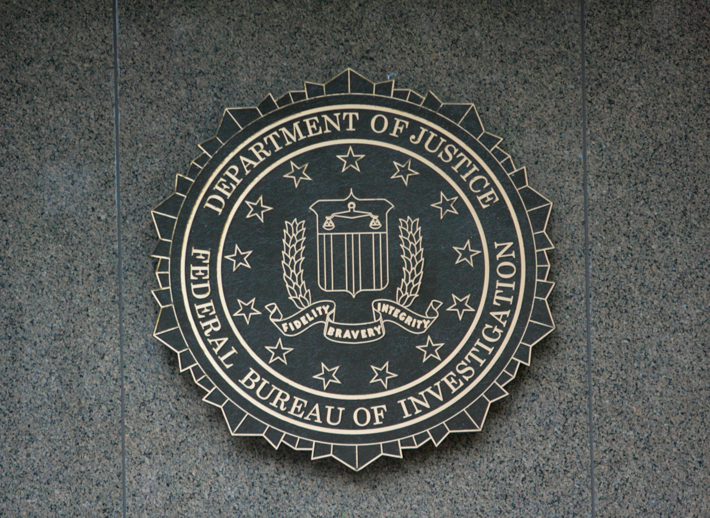

TAP_WASTE
The United States spent $405 million on wiretapping in 2024. Only 11.3% produced evidence. The rest — $258 million — was waste.
THE COST-EFFECTIVENESS COLLAPSE
From 2022 to 2024, the cost per wiretap order rose 29.5%—from $180,847 to $234,272. Over that same period, the incrimination rate fell from 12.9% to 11.3%. Source: Administrative Office of the U.S. Courts, Wiretap Report, 2024
The two trend lines cross and diverge, charting a system in freefall. This divergence is not an anomaly but the visible trace of systemic rot. As agencies pour more resources into surveillance infrastructure, equipment upgrades, and personnel costs, the returns diminish. Courts reject tainted evidence. Suspects walk free. Taxpayers foot a bill for negligence disguised as necessity.
In 2022, the cost per wiretap was $180,847. Each intercepted call cost taxpayers roughly $182K.
By 2024, that cost skyrocketed to $234,272. A 29.5% increase in just two years.
Meanwhile, effectiveness crashed. The rate of calls producing evidence fell from 12.9% to 11.3%. Higher cost, less results.
THE GEOGRAPHY OF WASTE
Wasted intercepts don't fall randomly. They cluster in high-population jurisdictions where federal task forces, state police, and local law enforcement step on each other's toes. California alone accounts for $80 million, nearly one-third of all national waste. Source: Administrative Office of the U.S. Courts, Wiretap Report, 2024
This geographic concentration exposes a deeper institutional failure: the fragmentation of American law enforcement. Federal and state-local agencies operate in the same jurisdictions, intercepting the same suspects, often unaware of each other's efforts. Resources multiply. Oversight atomizes. Accountability evaporates. The result is bureaucratic redundancy masquerading as security. Source: National Law Review, Not Every Wiretap Claim Belongs in Federal Court, 2026
Waste isn't distributed evenly. Six states account for 75% of all wasted spending on wiretaps.
California dominates at $80.4 million — nearly a third of the national total. Federal and state agencies compete in the same jurisdictions.
This geographic concentration reveals systemic inefficiency: redundant coverage, overlapping authority, and poorly coordinated resources.
WHAT THE MONEY CAPTURES
The $258 million in waste doesn't represent failure in the abstract. It represents concrete, specific failures: intercepted calls that lead nowhere, technical bungling, jurisdictional overlap.
Personal calls dominate, representing 35% of waste. These are conversations with no investigative value: family discussions, routine business calls, intimate moments. Agencies capture them anyway, justify them later, and move on. Encrypted and unreadable content accounts for another 18%. Duplicate coverage wastes 6%, the same suspects monitored twice over, the same worthless intelligence gathered twice, twice funded.
Personal calls dominate the waste. 35% of all wasted spending—$90.3 million—captured conversations with no investigative value.
Technical failures account for another 29%: encrypted content (18%), incomplete recordings (11%), and duplicate coverage (6%).
Only 8% and 6% are attributed to language barriers and financial/business calls. The system captures noise, not evidence.
OVERSIGHT FAILURE. DEMOCRATIC EROSION.
The wiretap system represents a fundamental failure of democratic oversight. Congress authorizes spending. Agencies spend it. Courts rubber-stamp applications. But no one questions its efficiency or return.
The $258 million is evidence of a system that has lost its foundation. When costs rise 30% while effectiveness falls, when the same suspects are tapped by overlapping agencies, when 35% of captured calls are personal in nature and legally irrelevant, the problem is not marginal. The problem is systemic.
